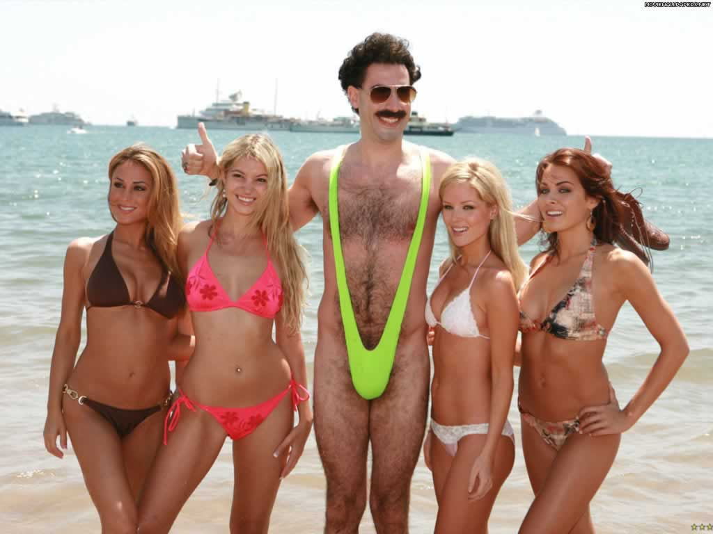
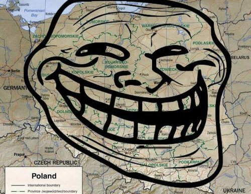
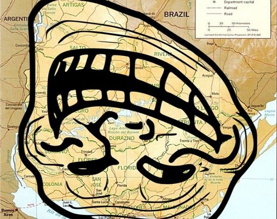
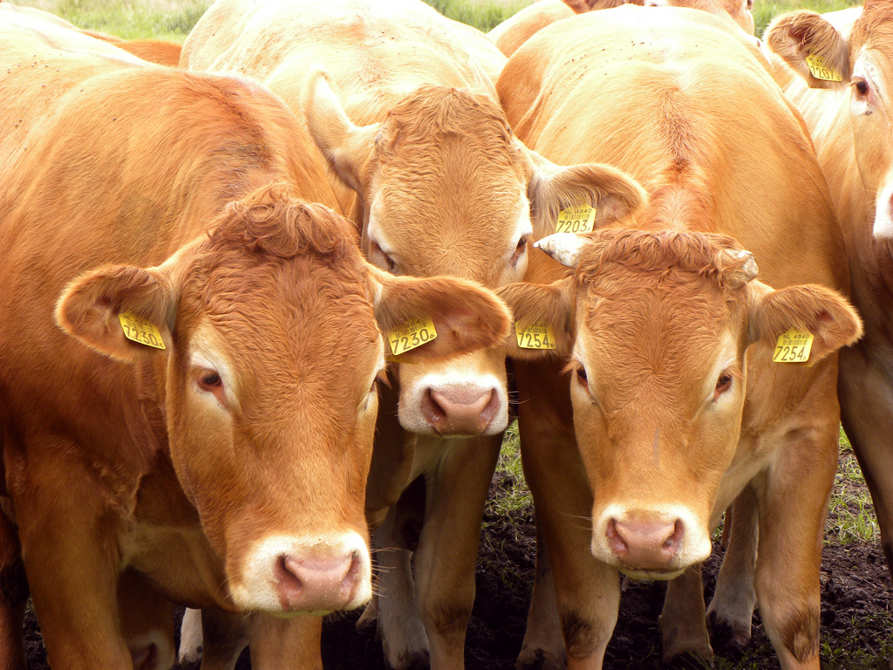
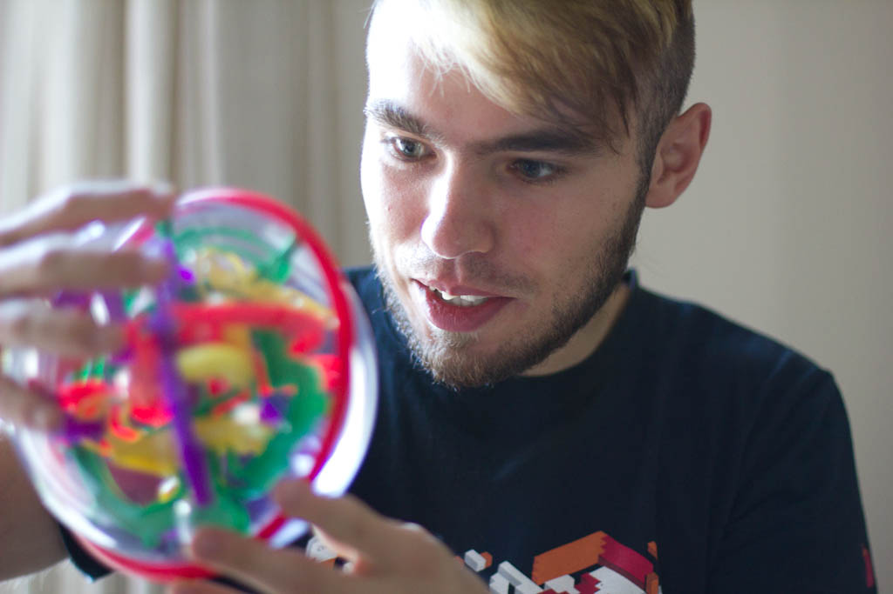
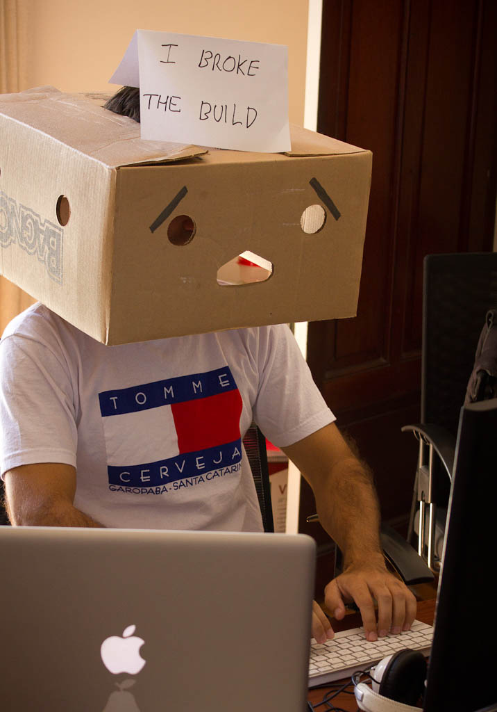
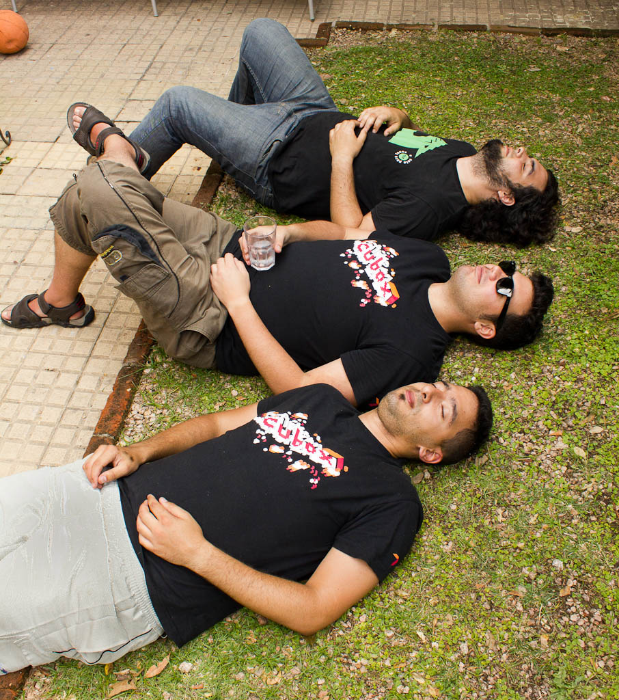
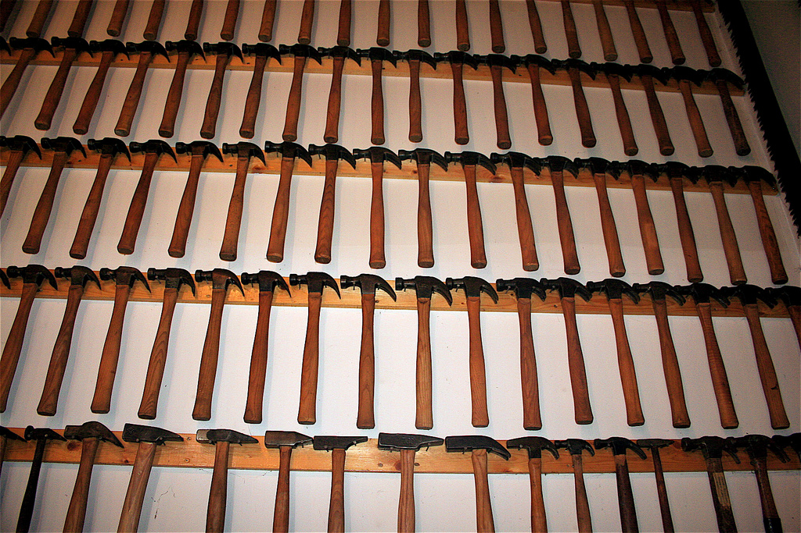

Jak sie masz?

Krzysztof Kowalik
Call me Chris...
@nu7hatch
@nu7hatch
Poland

Uruguay

Cows...

Gauchos
Tango
Football
Mate
Cubox

Cubox

Cubox

Cubox
Yay! Gifts!
Ruby Hero!
Optimization Monster!
I love what I do...
I am awesome!
http://nu7hat.ch
http://areyoufuckingcoding.me
Distributed Hell!
Wanna bigger hammer?
Wanna more hammers?
